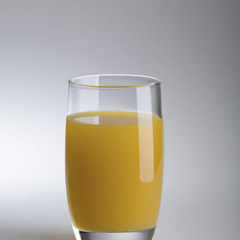
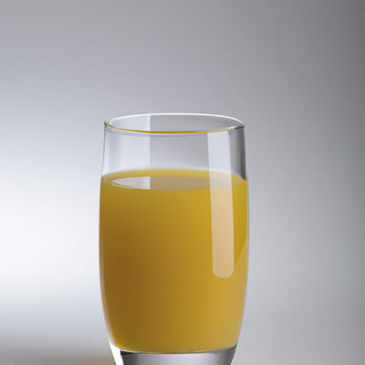
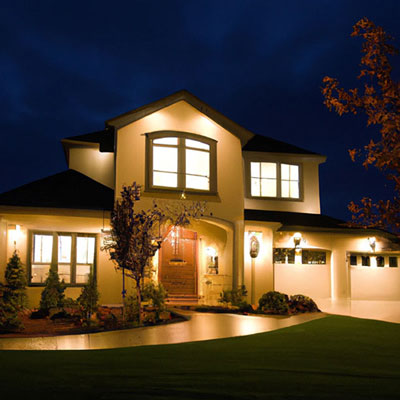
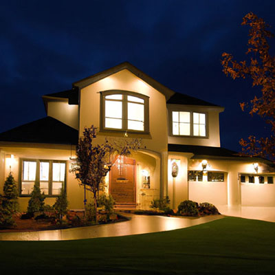

A farewell to line drawings? Exploring AI-generated images for aphasia therapy and assessments.
John E. Pierce
Prompt:

Images are a key part of aphasia assessment and treatment (and plenty of other areas of practice!). But it can be really difficult and/or expensive to find high quality images. Artificial Intelligence can now generate high quality images from a text prompt - I was interested in whether this might be useful to create customised images quickly and affordably.


 



 
